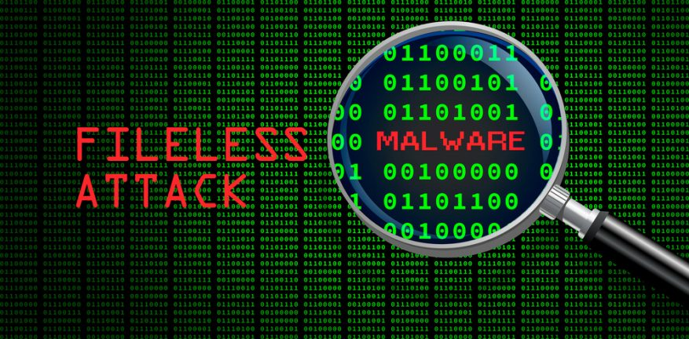

What is 'FILES MALWARE'?
Fileless malware doesn’t install anything initially, instead, it makes changes to files that are native to the operating system, such as PowerShell or WMI. Because the operating system recognizes the edited files as legitimate, a fileless attack is not caught by antivirus software — and because these attacks are stealthy, they are up to ten times more successful than traditional malware attacks.
Fileless Malware Example:
Astaroth is a fileless malware campaign that spammed users with links to a .LNK shortcut file. When users downloaded the file, a WMIC tool was launched, along with a number of other legitimate Windows tools. These tools downloaded additional code that was executed only in memory, leaving no evidence that could be detected by vulnerability scanners. Then the attacker downloaded and ran a Trojan that stole credentials and uploaded them to a remote server.